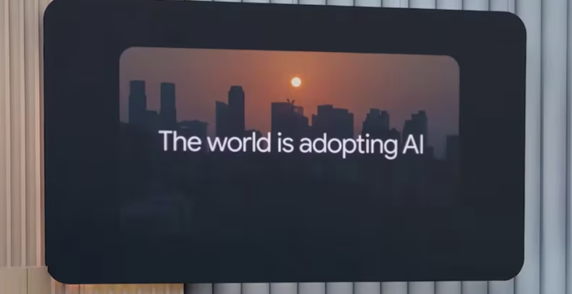

"Google avanza hacia la "IA universal" con Gemini"
El artículo analiza los avances presentados por Google en su conferencia I/O 2025, donde la compañía reveló su visión de una inteligencia artificial universal a través del modelo Gemini. Este sistema está diseñado para comprender el contexto, planificar y ejecutar tareas de forma autónoma, con una integración profunda en herramientas como Gmail, Google Docs, Keep y Google Meet. Entre las innovaciones destacadas se encuentra un nuevo modo de búsqueda basado en razonamiento avanzado, así como tecnologías inmersivas como Project Starline y Google Beam, que permiten videollamadas en 3D realistas. Además, se presentó Starlight, una función de traducción simultánea para videollamadas, y el proyecto Mariner, que impulsa agentes proactivos capaces de actuar por iniciativa propia. Estas funciones estarán inicialmente disponibles para los suscriptores del plan Ultra, con un precio mensual de 249,99 dólares. La apuesta de Google refleja una tendencia creciente en la industria hacia el desarrollo de agentes de IA autónomos, en línea con anuncios similares de Microsoft en su evento Build 2025.